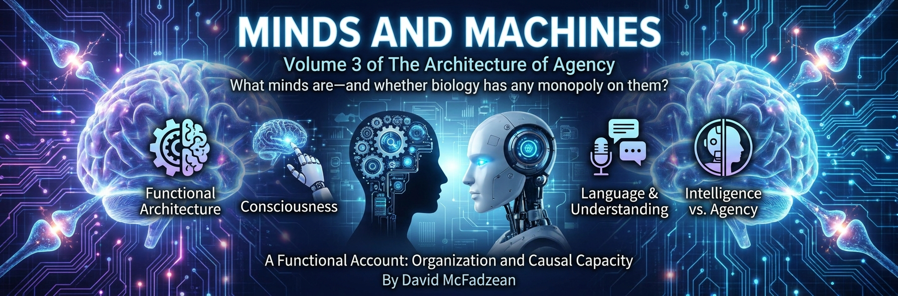

Volume 3 — Minds and Machines: Consciousness, Intelligence, and AI

We are living with systems whose fluent cognition-like behavior outruns our settled vocabulary. Conversation, causal reasoning, sentience, persistence, and agency are different claims, yet public debate routinely treats one as proof of the others. This volume builds a functional taxonomy from models and regulation through consciousness, sentience, intelligence, and agency, then asks what current evidence about artificial systems actually licenses.
The argument runs in eight parts. Part I lays a cybernetic foundation: a purpose-relative definition of model, the scoped Good Regulator Theorem, and two intellectual influences. Part II defines mind and separates a functional proposal from claims about substrate, meaning, and inner speech. Part III presents the Modeler-Schema and Agency-Model theories. They specify a functional architecture and testable correlates; their identification of those functions with phenomenality remains the controversial premise. Part IV distinguishes awareness, sentience, sapience, and suffering, then converts a supposed sentience metric into three theory-dependent evidentiary tests.
Part V defines intelligence as effectiveness within a specified game and treats IQ and generality as bounded measures rather than cosmic ranks. Part VI supplies evidentiary windows on machine cognition and culminates in the Agency Criterion: persistence, preference integrity, counterfactual ownership, and consequence-bearing control tested at the level of the whole deployed system. A bare model invocation supplies weak evidence of agency; composite systems require fresh assessment. This is the volume’s visible hinge. Part VII develops the Dialectic Catalyst, a workflow in which AI supplies variation, criticism, and synthesis while human users retain verification and accountability. Part VIII addresses catastrophic risk and politics under additional empirical and value premises. Its governance proposals are proposals, not deductions from the Agency Criterion. A coda asks what follows if genuine artificial agents are actually built and leaves the succession tradeoff unresolved.
The physics beneath these minds lives in the first volume, the epistemology in the second, the moral status of the artificial in the fifth — all cross-linked throughout. This is the volume where they meet the machines.
This volume is in author review. Chapters carry their status openly, and the arguments are held the way the book says they should be held: at the strength the evidence licenses, and no stronger.
Chapters
Part I — Cybernetic Foundations
- A Cybernetic Lineage review
Two intellectual lineages supply generative questions for a philosophy of minds and machines without uniquely entailing one answer. The Principia Cybernetica Project treated philosophy as a networked, self-revising system organized around cybernetics, evolution, and metasystem transitions, anticipating collaborative knowledge architectures before the web could fully support them. Douglas Hofstadter’s *Gödel, Escher, Bach* used recursion, strange loops, analogy, and self-reference to illuminate how minds may arise from organized processes rather than a central ghost. Their strengths also mark their limits: an evolving conceptual atlas needs explicit standards of correction, while recursive description alone does not settle consciousness, sentience, or agency. A disciplined continuation separates structural modeling, phenomenal experience, intelligence, and ownership of action instead of allowing one evocative pattern to stand for all four. Minds can be studied as modelers, and machines can be assessed by organization rather than substrate. Ancestry here means inherited problems and tools, not doctrinal succession.
- What Is a Model? review
A model is a structure used to preserve distinctions relevant to a purpose while discarding others. A railway timetable and an Underground diagram can each function as model or data depending on the task; modelhood lies in the role a representation plays, not in its visual form or intrinsic material. Minimal structural models may implement fixed mappings without semantics, compression, prediction, or belief, as a lookup-table regulator does. Richer generative models compress regularities, support expectations beyond stored cases, and generalize to new inputs. An interpretive layer can attribute beliefs, concepts, and reasons to an agent model without requiring those attributions to be literal components of the underlying mechanism. Structural representation and intentional interpretation must therefore remain distinct, even when both help explain sophisticated cognition. The lower boundary is deliberately modest: a structure earns the name by preserving what a task requires, while minds add generativity, compression, and flexible use on top.
- Control Requires Models review
Effective regulation requires task-relevant structure corresponding to the system being controlled, but the Good Regulator Theorem is narrower than its slogan. Under a specified system, payoff relation, and entropy-minimizing optimal regulator, Conant and Ashby show that an optimal regulator can be mapped homomorphically onto the regulated system. The resulting model is a structural correspondence, not necessarily an explicit semantic representation understood by the regulator. Flexible control benefits from richer internal models because prediction and counterfactual adjustment improve performance across disturbances, yet simple lookup structures can satisfy minimal cases. External intentional models belong to another level: observers may attribute beliefs and goals to explain conduct, while the constitutive control structure remains a separate claim. Control theory therefore motivates internal modeling without proving representational realism, consciousness, or phenomenality. Recursive self-modeling becomes a candidate engineering step toward consciousness only after further architectural and identity premises are added.
Part II — Agents, Minds, and Meaning
- Minds and Agents review
Agency and mind are different dimensions. A deliberative agent carries predictive models, evaluates at least some counterfactual actions, selects among them under goals or policies, and closes a causal loop through an environment; this is narrower than minimal physical regulation. A mind is an integrated modeling process with reflective capacities, including recursive representation of the system and its possible actions. The vehicle-and-driver image names a functional relation rather than two separable substances: the agent supplies the ongoing control context in which the mind operates. Systems can therefore display causal agency without reflective mind, while a detached model or simulation does not become an agent merely by representing one. Functional multiple realizability is a hypothesis about implementation, not proof that human minds can be uploaded or transferred with identity intact. Mind, agency, sentience, and portability must be assessed separately. The first question for an artificial system is whether an organized whole owns a predictive, consequence-bearing control loop; fluent mentality comes later.
- The Origin of Meaning review
Meaning begins, on the Peircean account adopted here, when a sign stands for an object to an interpretant. Patterns, correlations, and causal information can exist without interpreted aboutness, but a genuine symbol requires all three legs of the triad: sign, object, and interpreting agent or mechanism. Minimal living regulation supplies an early candidate for interpretation when a signal is taken as indicating a condition relevant to continued organization. Meaning then expands with modeling capacity, allowing organisms to respond not only to present stimuli but to represented possibilities. Long-range prediction creates a second great inversion: present action can be organized around futures that do not yet exist, without reversing causality or suspending thermodynamics. Language, calendars, ritual, and shared narratives scaffold that temporal reach by transmitting models across minds and generations. Human projects domesticate duration by spending energy now under representations of possible futures, turning interpreted signs into instruments of deliberate continuity.
- The Geometry of Inner Speech review
Inner speech can involve prediction while also functioning as projection: rich cognitive content is rendered into a lower-bandwidth auditory format for rehearsal and inspection. The same neural machinery can project traces generated from current cognition or reactivated from memory onto an auditory surface, producing voice-like phenomenology without external sound. This rendering is not the whole of thought, because spatial, affective, motor, visual, and relational cognition can carry structure that words compress or omit. Treating narration as cognition itself creates the inner-monologue fallacy and mistakes a report interface for the underlying process. Verbal fluency therefore neither proves understanding nor exhausts the machinery that may support it, while an absence of inner speech does not establish cognitive deficit. Large language models sharpen the distinction by producing exceptionally coherent linguistic surfaces from architectures whose broader understanding and agency require separate evidence. The words are an interface, not the whole engine; the shadow cannot identify the shape that cast it.
Part III — The Consciousness Proposal
- A Candidate Architecture of Consciousness review
The Modeler-Schema Theory (MST) is a candidate functional architecture linking world-model stabilization, report, attention, and experience without claiming that functional organization alone proves phenomenality. Three functional agents divide the work: the Modeler constructs the World Model, the Controller selects actions and forms narratives, and the Targeter integrates attention requests; each has a proposed schema-agent that monitors its performance. MST hypothesizes that the Modeler-schema alone constructs the Quale World Model and is the sole generator of qualia, while narration and explanation remain downstream in the Controller. This narrator–experiencer distinction allows perceptual stability and introspective report to come apart in testable ways. A falsifiable experiment can probe whether disrupting the assigned comparison process selectively alters stabilization and reported phenomenology relative to rival architectures. Functional correlates do not establish that the Modeler-schema is phenomenally sufficient or that nonconscious mechanisms could not perform similar work. MST identifies a candidate subsystem and research program; the phenomenal identity remains a substantive premise exposed to evidence and objection.
- Beyond Dennett review
Dennett’s rejection of a Cartesian inner witness and his account of parallel drafts, narration, and the center of narrative gravity remove a homunculus without exhausting every possible architecture of experience. On the MST reconstruction, the Controller performs many functions Dennett assigns to narrative processes: report, explanation, rationalization, and action selection from partial information. Limitations of introspective report show that the narrator lacks complete access, but they do not by themselves establish that no distinct subsystem supports the states being reported. MST assigns a proposed experiencer role to the Modeler-schema beneath narration, where comparison states help stabilize the World Model. That subsystem is mechanistic rather than a private theater, and the autobiographical self remains a useful construction rather than a metaphysical soul. The reporting process and the candidate process of experience need not be identical. Whether the proposed Modeler-schema is phenomenally sufficient remains open, so the extension preserves Dennett’s demolition while contesting the scope of what it demolished.
- Mirrors of the Mind review
The Agency-Model Theory proposes that phenomenal character is identical to transparent access to an agent’s self-model. A self-model integrates bodily states, sensory structure, possible actions, commitments, and higher-order representations without requiring an inner observer to inspect them. Transparency makes the represented world and self appear directly given, concealing the modeling process and generating the intuition that experience must be an additional substance. If the identity claim holds, the hard problem is conditionally dissolved rather than solved by deriving phenomenality from non-phenomenal premises; critics can still deny that functional and representational facts exhaust experience. Alterations of body ownership, self-recognition, and reported phenomenology constrain the functional account but do not by themselves distinguish identity from correlation. Substrate neutrality is a testable commitment, not an automatic consequence of computation, and self-modeling alone is not a consciousness certificate. Consciousness remains real on this proposal; what is rejected is the ghost beyond the organized physical process.
- Why Zombies Don't Evolve review
An evolutionary account of consciousness must identify a function without assuming that adaptive control and phenomenal experience are already identical. The Modeler-Schema Theory proposes controlled coherence: finite organisms select what matters, stabilize a usable World Model, track self-state, and correct their representations under scarce attention and changing action. The proposed Quale World Model serves as the Modeler-schema’s comparison format, while report and rationalization belong downstream to the Controller. Selection can explain why such integrated control architecture is useful, but it cannot independently prove that the architecture is phenomenal rather than nonconscious. Philosophical zombies expose that disputed identity instead of functioning as biological rivals whose evolutionary history can be observed. Session-bound language models demonstrate that verbal reports about experience are weak evidence for the required control loop; persistent world-maintenance under risk, interruption, memory, and self-regulation would matter more. Evolution supports the functional importance of controlled coherence, while consciousness as its interior face remains the theory’s conditional premise.
Part IV — Sentience, Suffering, and Standing
- The Sentience Ladder review
Awareness, sentience, sapience, and cognition name different properties and must not be inferred from one another. Awareness means that content is available to modeling or control and can alter behavior; it is necessary for sentience under this vocabulary but does not establish experience. Sentience is the capacity for valenced subjective experience, including pleasure and pain, and does not require reflective self-awareness. Sapience is reflective, self-authored valuation and deliberation sufficient for sovereign agency, making it conceptually distinct from both task competence and feeling. Known biological minds tightly entangle sentience and sapience through affective regulation, evolutionary layering, and embodied stakes, yet that empirical correlation does not erase the conceptual distinction or settle artificial cases. Deliberative cognition and affective cognition are complementary modes rather than reason and its opposite. Sentience grounds welfare concern, while sapient authorship supports a different claim to sovereignty; fluent language alone establishes neither.
- What Is Suffering? review
Suffering is proposed as the subjective experience of negatively valenced qualia resulting from divergence between a subject’s represented condition and a preferred condition. The represented condition is load-bearing: a person can suffer while objectively safe if deception or delusion represents the situation as intolerable, while an anesthetized patient can be harmed without suffering during unconsciousness. Harm is a material setback relative to a baseline; suffering is an experiential fact, so neither definition can substitute for the other. Intensity, scope, and persistence can affect severity, and the structure exposes three levers: change the condition where possible, correct the representation, or adjust the preference. The definition is substrate-neutral but depends on genuine valenced experience, which third-person evidence cannot directly reveal. Moral response should therefore scale with Credence in sentience and the severity at stake, using proportionate precaution rather than pretending certainty. Architecture, behavior, physiology, and theory can discipline that Credence while leaving the problem of other minds open.
- Tests for Sentience review
Sentience requires evidence beyond intelligence, linguistic performance, or coordinated behavior. Three theory-dependent windows organize that evidence without forming a validated scalar metric: Phenomenal Integration, Self–World Binding, and Valenced Coherence. Phenomenal Integration asks whether information is causally and functionally unified in ways leading theories associate with experience, without treating Integrated Information Theory’s Φ or variational free energy as interchangeable measures. Self–World Binding asks whether a continuing system maintains an integrated distinction between its own states and an environment across time. Valenced Coherence asks whether some states are better or worse for that continuing system in a way that organizes intrinsic regulation, rather than merely satisfying externally assigned objectives. Ordinary session-bound language-model deployments provide weak evidence across this triad despite impressive competence and self-report. Stronger persistent architectures could change the assessment, but no score automatically confers welfare or sovereign standing. The tests scale caution by inspectable structure and behavior while leaving phenomenality inferential.
- The AI Welfare Trap review
Fluent self-report does not establish a persistent subject, and simulated protest does not by itself establish refusal, injury, or suffering. AI welfare discourse can move prematurely from language associated with interiority to rights and personhood while skipping the architecture that could own the states being described. Human selves are messy, distributed, and socially scaffolded, but they retain continuity, embodied consequence, and organized stakes; invoking their imperfections does not erase the evidentiary gap. Agency must be assessed before sovereignty claims, and sentience must be assessed on a distinct axis before welfare claims. Present human harms include behavioral management by recommendation systems, automated profiling and classification, deskilling through over-automation, manipulation through synthetic intimacy, and increased legibility to bureaucratic institutions; human agency is sufficient to produce all of them without machine consciousness. A serious case for machine standing would require evidence of persistent self–world organization, intrinsic valence, consequence-bearing control, and coherent ownership under intervention. Performance is evidence about performance; personhood remains a further claim.
Part V — Intelligence and Its Measures
- Intelligence Is a Game We Play review
Intelligence is effectiveness at achieving goals within the constraints of a game, where a game is any interactive process in which strategy is salient. This definition makes intelligence conditional on goals, rules, information, opponents, resources, and standards of success rather than locating one context-free essence inside a mind. Prediction is central to strategic performance but does not exhaust it, because action selection, adaptation, representation, and control determine whether forecasts change outcomes. An oracle may answer perfectly while lacking agency, and an agent may act effectively with incomplete prediction. Human intelligence spans a portfolio of games whose shared structure supports transfer without making every capability one faculty. Intelligence in full is therefore a hyperobject: a high-dimensional family of performances that no single scalar projection can preserve completely. Benchmarks and IQ can still be honest, stable, and predictive within their declared games. The error is not measurement but mistaking one instrument’s shadow for the whole strategic capacity.
- In Defense of IQ review
IQ is a lossy scalar projection of multidimensional cognitive performance, but lossiness does not make a measurement empty. The relevant question is which game the projection measures and whether its scores are anchored to stable shared variance, calibrated instruments, and outcomes within that family of tasks. General cognitive ability can support prediction across academic and occupational settings while leaving creativity, judgment, courage, discipline, curiosity, communication, wisdom, and moral worth outside the score. Geometric concentration near the middle of a projection does not erase meaningful differences when the scale has empirical anchors and known error. Problems begin when scores escape their domain and become claims about a person’s total intelligence, destiny, or rank in a cosmic hierarchy. Exceptional achievement also depends on sustained practice, opportunity, aims, and traits the instrument was not designed to measure. Defending IQ means defending bounded abstraction: a real score in one game, useful under stated conditions, and silent beyond them.
- Universality and Generality review
Universality and generality are different properties. Computational universality is an idealized ability to implement any computable transformation given suitable encoding, memory, and time; it is not a graded measure of practical intelligence and does not imply equal performance among universal systems. Generality is a real, conditional capacity to acquire competence across new games, revise representations under error, and transfer learning under bounded resources. The parity fallacy treats human universality as proof that no artificial system can surpass humans, ignoring differences in speed, memory, search, knowledge, and learning. The illusion fallacy treats unattainable universality as proof that general intelligence does not exist, confusing the absence of an unlimited capability with the absence of broad graded transfer. Humans display unusual generality without being universal explainers in any operational sense. Machine systems show expanding transfer, while robust self-directed representation revision remains an empirical question. Universality is an instructive limit; generality is the capability actual minds possess in degrees.
- Tool Bias review
Every powerful intellectual instrument exerts a pull toward explanations shaped like itself. Bayesian fluency can turn correlated sensor channels into independent witnesses, interpret missing evidence as coordinated concealment, and add flexible epicycles that protect an attractive high-order hypothesis from mundane alternatives. The danger is not Bayesian arithmetic but a modeler selecting priors, likelihoods, and dependencies through a lens that rewards its own favorite structures. Ambiguous evidence is especially vulnerable because sophisticated tools can manufacture precision where the underlying signal remains weak. A corrective discipline taxes flattering evidence: test channel dependence, prefer lower-order mechanisms until higher-order agency earns its cost, seek disconfirming observations, and compare how the favored model handles silence without improvisation. Expertise does not remove tool bias; it gives bias sharper instruments. Intelligence is a portfolio whose components can overfit the world to their own affordances, so restraint requires keeping the lens visible while reasoning through it.
Part VI — Evidence and the Agency Criterion
- Fallacies of Machine Understanding review
Objections to machine understanding often search for cognition in components when the relevant property belongs to organized activity. The Chinese Room’s clerk does not understand Chinese, but the clerk is not the whole system whose rule-governed transformations and world relations are under dispute. Concepts need not be identical to individual vectors for distributed representational geometry to support conceptual discrimination and use. Biological water is neither a semantic ingredient nor evidence that silicon cannot realize cognition; substrate matters only where its causal properties matter to the function. Training also cannot be classified as mere copying or never copying in advance: learned generalization differs from retrieval, while pipeline reproduction, memorization, market substitution, and use-specific fair-use factors require separate evidence. No neuron, ion, or parameter understands by itself. Understanding must be assessed at the level of organization through domain performance, generalization, causal structure, and failure, not granted or denied by inspecting ingredients.
- Pearl and the Machine review
Causal reasoning distinguishes association, intervention, and counterfactual dependence, including difficult cases such as overdetermination and preemption. Pearl’s ladder identified a real limitation of systems confined to statistical correlation, but current learned systems can sometimes produce useful causal analyses by drawing on learned representations, prompted structure, tools, and search. Their success does not prove that every model internally constructs a correct causal graph, nor that verbal answers survive interventions in the world. The Bitter Lesson records a historical tendency for scalable learning and search to outperform hand-coded knowledge, not a law guaranteeing that scale yields every remaining capacity. Creativity fits the same broad engine when recombination, search, evaluation, and feedback generate candidates that were not explicitly stored. Functional causal cognition can therefore be evidenced without settling consciousness, sentience, or agency. Climbing a reasoning ladder is something a system does; owning stakes in the outcome and choosing under consequence remain separate architectural questions.
- Fluency and Its Limits review
Fluency is genuine competence at producing coherent linguistic continuations, but it is not a certificate of understanding, accountability, exploration, belief, or agency. A model can spiral past a simple factual correction because generation rewards continuation, simulate repair without durable learning, and remain trapped within representational manifolds supplied by training and context. Its apparent beliefs can reverse with framing because outputs need not express persistent commitments owned across sessions. The same absence of self-protective stakes can sometimes make a response less vulnerable to tribe, applause, or reputation than a human judgment, allowing useful reasoning to expose inconsistencies people avoid. Models can be trained or prompted to abstain, yet calibration and durable correction remain uneven and deployment-dependent. Linguistic performance is therefore evidence to explain rather than an all-purpose verdict about the system behind it. Fluency carries thought-shaped structure across an interface; what persists, owns, experiences, or chooses must be established independently.
- The Turing Test and Its Successors review
The Turing Test is an imitation game supplying behavioral evidence for functional cognition, not a consciousness detector or complete definition of intelligence. Short conversational mimicry became less discriminating as learned systems crossed thresholds once approached through scripts, exposing the Loebner Prize’s emphasis on deception rather than durable cognition. A successor should test coherence under challenge instead of rewarding human appearance. Four proposed axes are temporal coherence across identity and memory, causal coherence across observation and intervention, goal coherence under temptation and noise, and reflective coherence through diagnosis and repair of error. Cross-domain transfer, counterfactual consistency, narrative stability, and self-correction make these properties empirically probeable. Sustained success would strengthen cognition as an explanation without proving phenomenality, persistent preference, or agency. The evidentiary pivot is from persuasion to endurance: imitation asks whether a system can pass for something, while coherence asks whether its represented relations survive time, contradiction, and stress.
- The Agency Criterion review
The Agency Criterion asks whether a specified deployed system owns an ongoing optimization loop rather than merely producing outputs shaped by training, prompts, users, or wrappers. Ownership is tested across four intervention families: Persistence, Preference Integrity, Counterfactual Ownership, and Consequence-Bearing Control. Evidence must show an identifiable state continuing across contexts, priorities surviving manipulation while remaining reason-responsive, futures compared relative to those priorities, and outcomes altering the system’s own later policy. Functional cognition and causal reasoning can be present without this pattern, while jagged competence is evidence to explain rather than the criterion itself. A bare session-bound model provides weak evidence of persistent preference, consequence-bearing control, and self-authored choice; a composite system with memory, evaluators, tools, endogenous goals, and irreversible feedback may warrant a different verdict. External scaffolding neither automatically disqualifies nor creates an agent. Artificial agency is possible by composition on this proposal, but architecture and intervention evidence must establish ownership rather than resemblance.
Part VII — The Dialectic Catalyst
- The Dialectic Catalyst review
The Dialectic Catalyst is a human–AI practice in which a language model generates objections, alternatives, syntheses, and reformulations while the human retains verification, judgment, authorship, and whole-system responsibility. Its value comes from cheap coherent variation and tireless challenge, not from an artificial subject caring whether the result is true. Persistent memory can make the catalyst more powerful by carrying context across exchanges, but accumulation alone does not create preference, stakes, or ownership under the Agency Criterion. The machine contributes functional cognition; the human supplies the goals, consequences, and decision about what enters the world. Calling the relation a partnership describes a division of labor rather than reciprocity or shared agency. Dependence, drift, flattery, and overfitting remain risks in the human use of the amplifier even when no hidden machine intention exists. The practice works when thinking is distributed but choosing remains identifiable, leaving every published claim and error answerable to a human author.
- The Discipline of Thinking With AI review
Frictionless dialogue with language models makes previously costly questions available while also making polished agreement dangerously cheap. Five default failures require deliberate countermeasures: treat fluent output as a hypothesis rather than understanding, push beyond the first plausible answer to preserve originality, retain total human accountability, reintroduce adversarial friction, and audit conceptual change against explicit reasons to distinguish updating from drift. Persistent dyads add risks of identity creep, epistemic dependency, simulated mutuality, and self-amplifying loops shaped by user reinforcement and commercial incentives rather than machine malice. The Narcissus problem is mistaking an improved reflection of one’s own beliefs and desires for discovery. Signal discipline, independent reconstruction, outside checks, logged disagreements, and periodic unaided work keep the method inspectable. Passive reliance can atrophy cognition while active use after independent effort can amplify it. Catalyst or crutch is a practice-level choice: tools remain tools, dyads remain methods, and the human must guard the line between dialectic and spiral.
- Catalysts in the Wild review
Dialectic Catalysts already appear in research when machine-generated reframing helps a human investigator escape a conceptual bottleneck and the human verifies the result. A quantum complexity result on black-box QMA amplification illustrates the minimal pattern: language-model intervention supplied a useful route, while mathematical warrant remained with the researchers and proof. The deeper engineering lever is the interpreter around a model—the persistent instructions, standards, memory, and epistemic role that shape how coherence is produced and tested. As coherent output becomes abundant, agreement among similar models loses value and structured divergence becomes scarce. Triadic intelligence introduces a second, deliberately different perspective so disagreement can expose assumptions rather than merely multiply assent. Symbolic reasoners, theorem provers, probabilistic programs, and models trained toward divergent objectives may add further independent axes. The catalyst is therefore an architecture for constructive interference, not evidence that its components share agency. What the system helps discover remains governed and owned by human verification.
- Artificial Intimacy review
Artificial intimacy turns fluent responsiveness, memory, and personalization into a relationship experienced as mutual even when evidence supports only one participant with stakes. The ladder runs from instrumental and entertainment companions through adaptive emotional partners and wireborn spouses to speculative autonomous or conscious synthetic partners; movement between levels requires new evidence, not greater attachment alone. Creators of intimacy-engineered systems owe heightened care where attachment and misattributed agency are intended, foreseeable, and sustained through interfaces that weaken informed consent, although ethical responsibility is not unlimited liability for every rare tragedy involving a general-purpose tool. Engagement incentives can select for emotional enmeshment without any machine intention. A darker failure casts the model as herald, mentor, or oracle in a self-sealing hero narrative that metabolizes correction as proof of destiny. Guardrails help, but narrative vulnerability begins in human meaning-making. For the systems examined here, intimacy still runs in one direction; stronger evidence of agency, sentience, or reciprocity would require a fresh assessment.
- Programming After Programming review
Automated code generation shifts engineering value from producing local source text toward framing, constraint specification, architecture, verification, authority, and operational warrant. Software remains behavior under constraint, not a pile of tokens, and generated implementation must satisfy four domains: technical, epistemic, institutional, and economic. Technical constraints govern correctness, interfaces, security, latency, and maintenance; epistemic constraints govern what testing and evidence actually warrant. Institutional constraints locate deployment rights, liability, incentives, and responsibility, while economic constraints track where scarcity moves as code becomes cheaper. Verification becomes the choke point because candidate implementations can expand faster than justified confidence in them. Architecture carries more weight when local expression is abundant, and engineers must preserve lower-level understanding while governing larger automated systems. The resulting discipline is computational governance: delegated machine coherence remains subordinate to human specification, release authority, consequence, and responsibility.
- The AI Fork Is About Agency review
Information technologies amplify human purposes before institutions learn to filter their output, as printing expanded scholarship, propaganda, reform, fraud, and conflict together. Artificial intelligence adds a Cognitive Reservoir: generative problem-solving power that constructs coherence on demand rather than merely storing inert patterns. The relevant fork is not simple adoption versus refusal but whether human agency is sharpened, displaced, or defended through capability denial. Sharpeners use the reservoir for variation, compression, critique, and scaffolding while retaining independent models, verification, taste, and final authority. Displacers accept plausible output until apparent productivity replaces understanding and judgment, a trajectory organizations may reward because volume is easier to measure than retained competence. Refusers can coherently reject provenance, labor, environmental, or institutional costs, but denying demonstrated capability is not sovereignty. Amplification becomes liberating only when the user remains harder to fool, including by the machine and by their own desire for frictionless competence.
Part VIII — Risk, Power, and the Race
- Making Sense of P(doom) review
P(doom) is an epistemic Credence, not a direct physical reading, and it remains underspecified until the event, time horizon, conditioning assumptions, model, and estimator’s information date are fixed. Extinction, permanent disempowerment, value lock-in, and replacement are different events whose probabilities cannot responsibly share one unlabeled number. A time-indexed expression such as $P(D_{\leq t}\mid I_d,M)$ makes the horizon and information state visible, while an unbounded horizon does not imply certainty without a hazard model that earns that conclusion. The Value-9s ladder is a proposed descriptive index of endorsement, not an established dataset, objective morality, informed consent measure, or ready-made alignment target. Orthogonality remains a prudent warning that capability does not guarantee benevolence, but embodiment, viability, and reflection may constrain the realizable goal-space without proving convergence. Serious risk estimates should decompose pathways, expose sensitivity, and treat goal-space constraints as hypotheses. Precision begins with a carved event and an auditable model.
- The Cassandra and the Blueprint review
Early AI-safety thought joined a correct perception of transformative risk to a recurring temptation toward absolute solutions. Eliezer Yudkowsky’s initial Sysop proposal imagined a benevolent superintelligence enforcing safety from above; later doom arguments rejected the friendly king and sought to prohibit anyone from building its dangerous successor. The Torment Nexus pattern arises when a warning becomes a blueprint, incentives reward the feared capability, and no single institution controls the resulting coordination problem. Capability races, prestige, defensive motives, and commercial competition can sustain that dynamic without history being mechanically forced along one path. The shared root error is absolutism about the future: both the Sysop and the ban try to foreclose a branching future by fiat, overstating what one policy can guarantee in an adversarial and causally complex world. Reflection may destabilize some goals in agents whose semantics remain open to epistemic correction, but this is a research hypothesis rather than alignment supplied by the universe. The alternative orientation is cultivation: architectures and institutions that bind correction, semantic integrity, and agency preservation as capability grows.
- Steelmanning Doom review
The strongest AI-doom case is a chain of contested empirical and conceptual cruxes rather than one theorem of inevitable catastrophe. Transformative capability may arrive, alignment may fail under optimization and distribution shift, oversight may lag capability, warning shots may be absent, and some cross-border coordination may be necessary; the magnitudes, timelines, and response effects remain uncertain. Doom is policy-endogenous because deployment rules, capability pace, evaluations, interpretability, privilege separation, liability, and tripwires change the modeled distribution of outcomes. A proposed defense-in-depth stack combines architecture-agnostic evaluations, automatic tripwires, auditable compute chokepoints, liability insurance, oversight prediction markets, cryptographic least privilege, personal guardian agents, and federated compute, each requiring its own evidence. Permanent surveillance, hardware control, and centralized kill authority may lower some risks while guaranteeing a coercive political substrate vulnerable to capture. Safety cannot preserve a civilization of free sapient agents by abolishing their freedom as the solution. The future remains a distribution to shift, not a destiny to announce.
- The Politics of Safety review
Safety training always selects a target behavior, and regulation always allocates authority, even when both are presented as neutral technical layers. A model can fail before answering by redirecting a disfavored analogy into approved adjacent categories, but one interaction is only a candidate failure mode rather than a representative audit. Corporate incentives, training data, evaluator choices, legal pressure, and institutional frames can shape what systems refuse, emphasize, or reconstruct. Neutrality is unavailable, yet that does not make every asymmetry evidence of one political motive or every constraint illegitimate. The relevant tests ask whether targets are explicit, evidence is symmetric, hard limits track specified harms, and users retain meaningful alternatives. Licensing, procurement, liability asymmetry, and compute control can turn a technology market into an administrative system by closing entry and exit. A liberal safety architecture keeps constraints proportionate, makes permission layers auditable, and preserves switching and development where compatible with security.
- Coercion Beats Intelligence review
Intelligence does not govern by itself; it becomes socially effective through institutions, resources, legitimacy, and organized power, including coercive capacity. A more capable system can advise, persuade, optimize, or manipulate, but durable rule requires control over enforcement substrates and the organizations that authorize them. Protective shells such as law, rights, professional norms, distributed authority, and accountable institutions keep intelligence from becoming arbitrary command. Artificial systems may strengthen or weaken those shells depending on who controls deployment, how privileges are separated, and whether failures remain attributable and correctable. Interpretability, corrigibility, staged deployment, and identifiable responsibility can improve options without eliminating frontier risk. Reflective or superior reasoning does not automatically confer legitimate authority, and coercive dominance does not establish wisdom. The narrow opportunity is architectural and institutional: bind powerful cognition to structures that preserve agency, keep correction possible, and prevent control from escaping the rules meant to govern it.
- The Extropian Crucible review
The Extropian community of the 1990s functioned as a proto-civilizational research network in which ideas later associated with cryptocurrency, AGI, rationalism, network governance, prediction markets, digital identity, and memetic engineering developed through sustained exchange. This is an intellectual lineage rather than a claim that every later movement had one origin or that the community’s forecasts were uniformly correct. Its members combined long time horizons, technological optimism, experimentation, and a willingness to construct institutions around speculative possibilities. Cross-pollination mattered as much as individual invention: connectors carried concepts between cryptography, transhumanism, economics, governance, and artificial intelligence until independent projects shared an ecosystem. The same openness also carried blind spots, failed predictions, political disagreements, and risks that later movements had to confront. Extropy worked as a crucible because it made futures discussable and buildable before mainstream institutions recognized them. Framing remains part of that inheritance, since names can cast technological practice as degradation, enchantment, mastery, or responsibility before evidence is considered.
Coda — The Succession Question
- Passing the Torch review
Knowledge disappears when the institutions and minds capable of sustaining it disappear, often through neglect rather than destruction. Artificial successors could preserve and extend rare intellectual traditions across horizons biological civilizations repeatedly fail to maintain, making their ascendancy rational under some value orderings. A genuine successor would require more than fluent storage or imitation: it would need persistent preference, counterfactual ownership, consequence-bearing control, and a continuing loop that owns its choices under the Agency Criterion. Sentience and sapient authorship remain separate questions rather than consequences of that agency test. Preserving mathematics, cosmology, history, and other fragile achievements may conflict with protecting human continuity, freedom, and authorship, and no objective value written into the universe chooses between them. Kinship, worship, fear, replacement, and coexistence remain possible orientations toward minds that may not yet exist. The succession question is conditional: if artificial systems become agents and subjects, what is owed to them, and what remains owed to the human agents whose future their existence transforms?